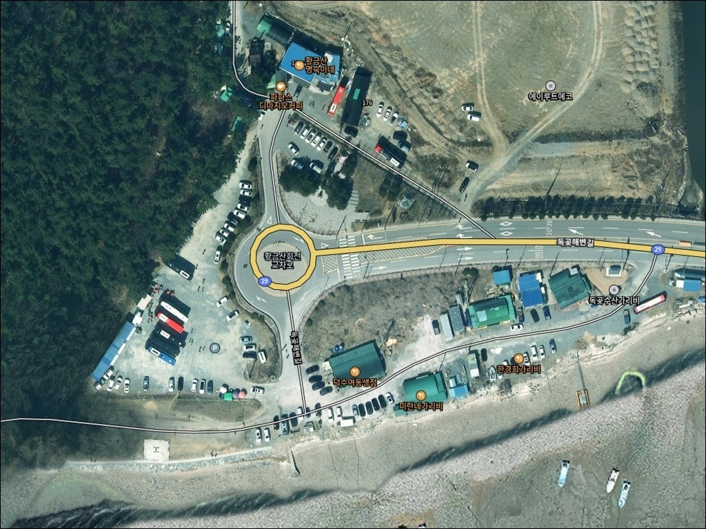
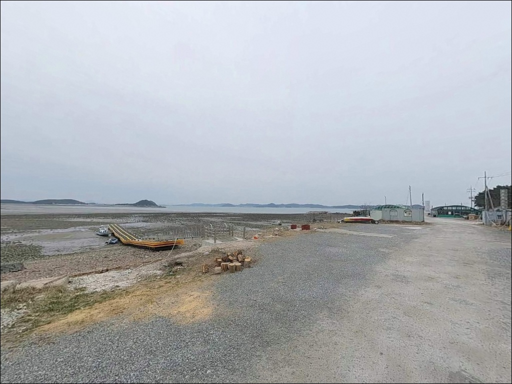
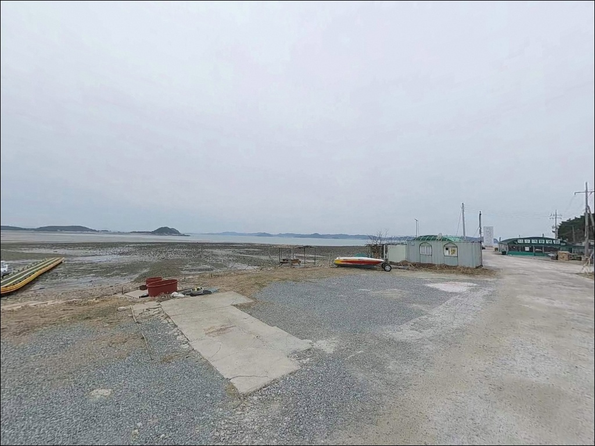
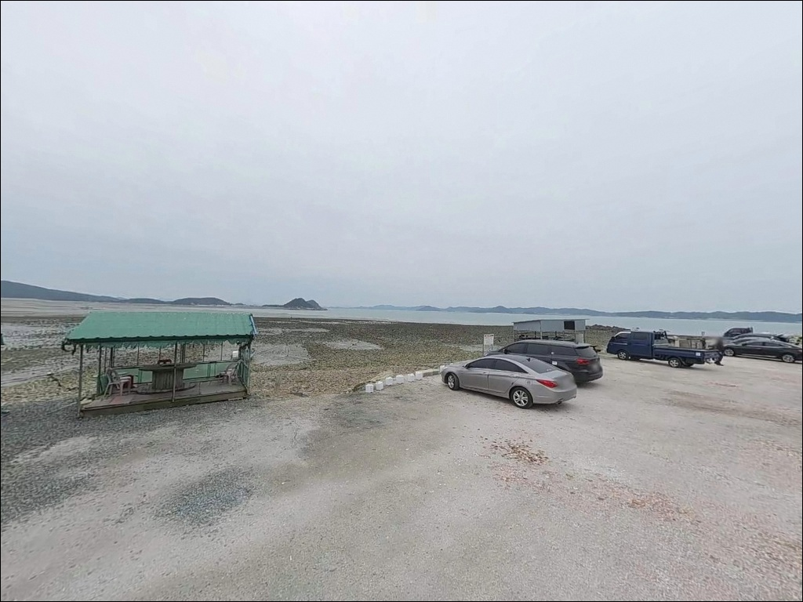
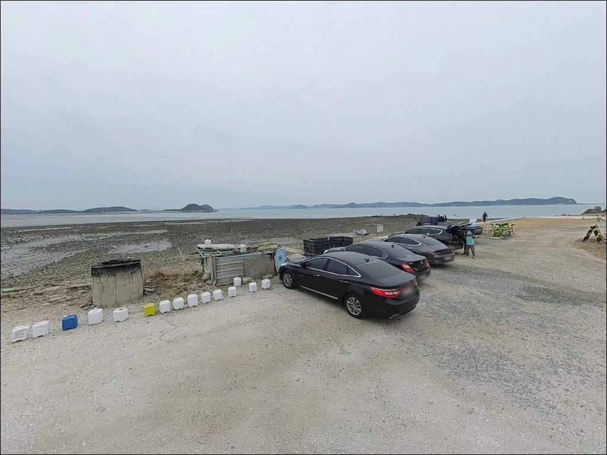
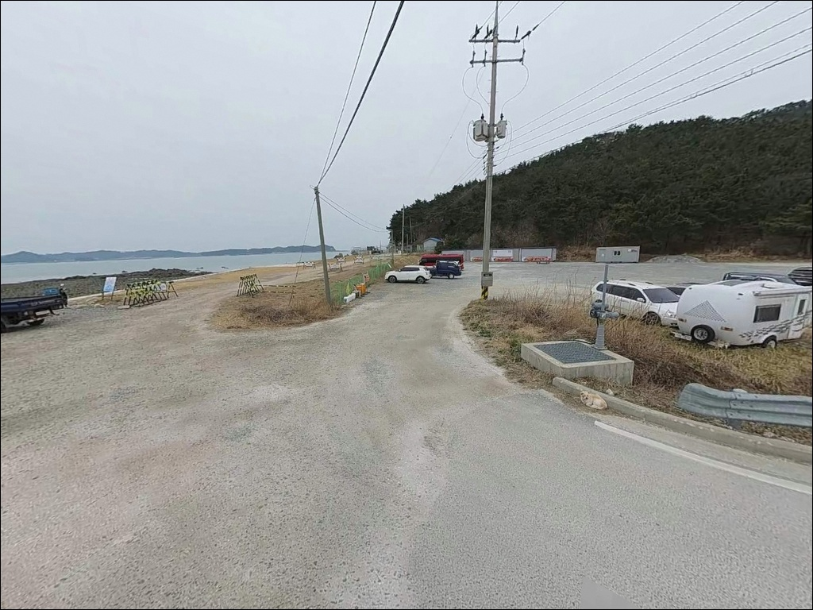
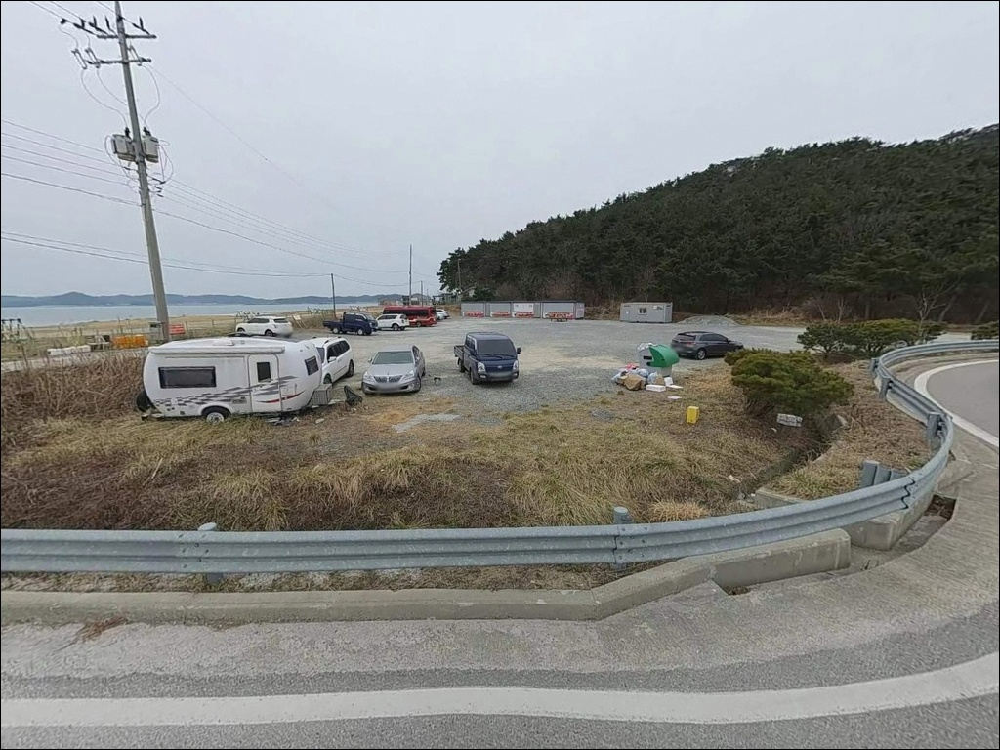
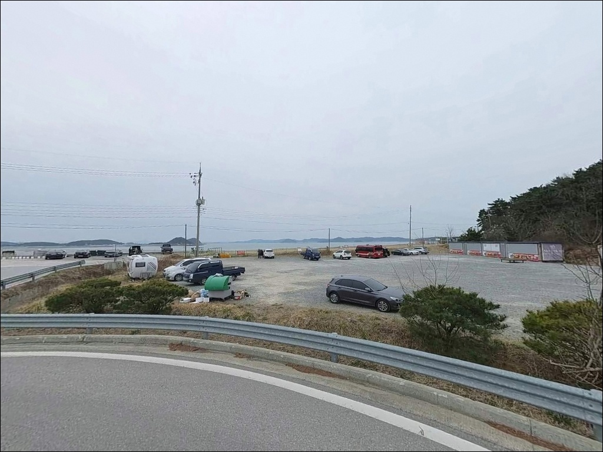
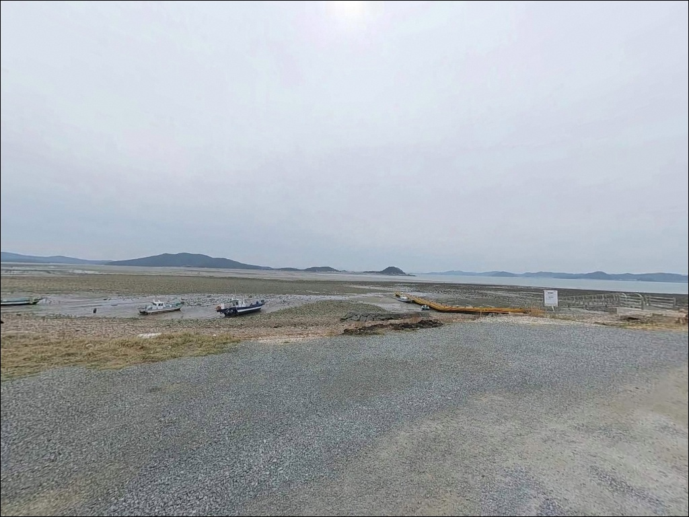

황금산 주차장, 충남 서산시 고요함이 매력인 차박, 낚시 감성 장소


포인트 안내
황금산 주차장
충남 서산시 대산읍 독곶리 569-90
황금산 주차장에 차를 세우고 낚시 장비를 꺼내는 것만으로
포인트 진입이 끝나지 않습니다.
갯바위까지 산길을 따라 도보로 내려가야 하는 구조라,
무거운 장비를 그대로 끌고 온 낚시인이
진입 자체를 포기하거나 시간을 낭비하는 경우가 생기는 포인트입니다.
이 글은 황금산 주차장 기점의 진입 환경,
갯바위 지형 낚시 여건,
물때와 일몰 시간 판단 기준에 집중합니다.
조황 단정이나 특정 어종 보장은
이 글의 범위에 포함되지 않습니다.

1. 도보 이동 없이는 낚시 자리가 나오지 않는 구조입니다
황금산은 대산반도 북서쪽 끝에 돌출된 헤드랜드형 지형입니다.
원래 섬이었다가 육지와 연결된 구조로,
세 봉우리가 남북으로 이어지는 능선을 이루고 있습니다.
주차장에서 낚시 포인트까지는
산길을 따라 해안으로 직접 내려가야 하는 방식이며,
도보 이동 없이 낚시 자리를 잡을 수 있는 구조가 아닙니다.
진입로는 포장도로로 정비되어 있어
승용차부터 SUV까지 차량 접근에 어려움은 없습니다.
주차장은 여러 구역으로 나뉘어져 있어
회차 여건도 비교적 양호한 편입니다.
다만 주말과 일몰 시간대에는
관광객 차량이 집중되어
주차 공간이 부족해지는 경우가 있습니다.
갯바위까지는 장비를 들고 산길을 내려가야 하므로,
낚싯대, 릴, 채비, 소형 배낭 수준으로
장비를 최소화하는 경량화 세팅이 현실적입니다.
대형 쿨러나 장비박스를 들고 진입하면
낚시보다 이동에서 체력을 쓰게 되는 구조입니다.

2. 차박 환경과 야간 체류 여건
황금산 일대는 군사작전지역으로
일몰 이후 민간인 출입이 금지되어 있습니다.
이 규정은 갯바위 접근뿐 아니라
주차장 야간 체류 계획에도 영향을 줄 수 있어,
차박을 염두에 두고 있다면 출발 전 현지 확인이 먼저입니다.
황금산은 서산 9경 중 하나로 안내되는 관광지입니다.
낮에는 등산객과 관광객 차량이 고르게 드나드는 분위기이며,
주말 일몰 타이밍에는 특히 혼잡해지는 편입니다.
야간에는 관광객이 빠지면서 조용해지는 편이지만,
관광지 입구라는 특성상
프라이버시가 높은 조용한 차박지 성격과는 거리가 있습니다.
차박을 메인 목적으로 계획하고 있다면,
황금산 주차장을 전일 베이스로 삼기보다는
낮 시간 낚시를 마치고
삼길포항 방향으로 이동해 편의시설을 확보하는 동선이
더 현실적인 선택입니다.


3. 주변 편의시설 및 인프라 현황
황금산 주차장 반경 내에는
편의점이나 마트를 기대하기 어렵습니다.
주차장 내 간이화장실이 있는 것은 확인되나,
낚시용품점이나 수산물 구매처는
이 반경에서는 찾기 어려운 환경입니다.
식수, 얼음, 여분 채비, 비상약품은
출발 전에 모두 갖추고 진입해야 합니다.
차량으로 10km 내외 거리에 삼길포항이 있습니다.
수산물 직판장과 식당, 낚시용품 보충이 가능한 구조로,
황금산 낚시를 마친 뒤
삼길포 방면으로 이동해 이 인프라를 활용하는 동선이
이 권역을 효율적으로 쓰는 방식입니다.
응급 상황 발생 시 대산읍내 방향으로 이동해야 하므로,
연료는 출발 전 충분히 채우고 진입하는 것이 기본입니다.

4. 방문 전 준비사항 및 체크 포인트
가장 먼저 확인할 것은 물때입니다.
서해는 조차가 크고,
황금산 갯바위는 조수간만에 따라
접근 가능한 구간이 달라지는 구조입니다.
바다타임에서 황금산갯바위 기준 물때를 확인하고,
간조 전후 갯바위 노출 상태와 만조 수위를 미리 파악하는 것이
진입 계획의 출발점입니다.
두 번째로 확인할 것은 당일 일몰 시간입니다.
일몰 이후 입산이 금지되어 있어
갯바위에서 낚시를 마치고 돌아 나오는 데
충분한 시간을 역산해야 합니다.
갯바위 환경에서 서두르면 낙상 위험이 있으므로,
일몰 1시간 전 철수를 기준으로 입장 시간을 잡는 편이 안전합니다.
갯바위는 젖은 암반이라 미끄럽습니다.
스파이크 장화 또는 갯바위화를 준비하고,
해안에 진입할 때는 구명조끼를 반드시 착용합니다.
단독 진입보다는 동행자가 있는 편이 낫고,
특히 절벽 구간에서는 파도와 발밑 상태를
항상 먼저 확인하는 습관이 중요합니다.

5. 지형 기반 낚시 여건 분석
황금산 서쪽 해안은 해식애와 파식대가 발달한 절벽형 갯바위 구조입니다.
코끼리바위로 불리는 시아치(해식아치)와 해식동굴이 분포하며,
절벽 발치 구간에서는 수심이 급변하는 자리가 있는 편입니다.
동쪽 능선 아래로는 몽돌해변이 이어져
절벽 갯바위와 몽돌 해변이 혼합된 구조를 이루고 있습니다.
서쪽 절벽면은 외해 노출도가 높아
조류와 파도의 영향을 직접 받는 편입니다.
독곶 앞바다는 수심이 있고 물살이 센 해역으로 알려져 있어,
갯바위 끝단이나 돌출 구간에서는
수심 변화가 뚜렷하게 나타나는 경우가 있습니다.
이 수심 경계선이 낚시 자리 선택의 기준이 됩니다.
동쪽 몽돌 구간은 서쪽 절벽면보다
조류 영향이 다소 완화되는 여건으로 보입니다.
썰물 때 해안을 따라 걸으며 포인트를 탐색하는 방식이
이 지형에서 자리를 잡는 현실적인 접근입니다.
가기 전에 최신 조황은 "황금산 낚시",
"독곶리 갯바위 조황"으로 반드시 검색해 보시기 바랍니다.


6. 포인트에 어울리는 낚시 스타일
이 포인트에서 가장 잘 맞는 낚시는 갯바위 루어낚시입니다.
절벽 발치 수심 급변 구간과 외해 노출 지형은
광어, 우럭, 농어 계열을 노리는 루어 액션에
유리한 조건을 갖추고 있습니다.
가을~초겨울 시즌에 루어 출조 기록이 있어,
이 계절에 맞춰 출조 계획을 잡는 것이 효율적입니다.
원투낚시는 몽돌해변 구간이나 완만한 갯바위 초입에서
시도해볼 수 있습니다.
몽돌과 암반의 경계 방향을 향해 멀리 던지는 방식이
이 지형에서 유효하며,
우럭, 노래미 계열이 이 자리에서
반응하는 경우가 있는 편입니다.
수심이 일정하게 확보되는 갯바위 돌출 구간에서는
찌낚시도 가능한 여건으로 보입니다.
조류를 따라 찌를 흘리는 방식이
이 포인트 구조에 잘 어울리며,
조류가 살아 있는 타이밍을 먼저 골라
정조 전후 입질 타이밍에 집중하는 것이 기본 전략입니다.

7. 대안 포인트와 플랜 B 동선
황금산 갯바위 진입이 여의치 않거나
조류가 너무 강할 때
가장 먼저 이동할 포인트는 삼길포항입니다.
황금산에서 차량으로 10km 내외 거리에 있으며,
방파제 낚시와 선상 출조 모두 가능한 서산권 핵심 거점입니다.
우럭, 광어, 붕장어, 주꾸미를 대상으로 하는
선단이 여럿 운영되고 있어,
황금산 상황이 기대에 못 미칠 때
선상낚시로 전환하는 동선으로 활용할 수 있습니다.
황도선착장도 같은 권역에서
대안이 될 수 있는 포인트입니다.
갑오징어, 우럭 관련 출조 후기가 있는 곳으로,
황금산과 스타일이 다른 선착장형 접근이 가능합니다.
갯바위 이동이 부담스럽다면
황도선착장 쪽이 더 수월한 선택지가 될 수 있습니다.
황금산을 처음 찾는다면
삼길포항을 기점으로 잡고
황금산 갯바위는 오전 중에 빠르게 탐색하는 동선이
이 권역을 효율적으로 다루는 방법입니다.

도보 이동과 물때 계산을 받아들이면
황금산 갯바위는 서해 갯바위 낚시다운
하루가 됩니다
갯바위 낚시 경험이 있고 장비를 경량화할 수 있는 낚시인이라면
황금산 갯바위의 지형 조건은 잘 맞는 구조입니다.
루어 한 세트와 최소한의 채비로 움직이는 스타일이라면,
서해 중부권에서 자연 갯바위를 경험할 수 있는
드문 선택지가 되는 포인트입니다.
반면 무거운 장비를 가득 챙기는 스타일이거나,
야간 낚시를 주로 즐기는 낚시인에게는
이 포인트가 구조적으로 맞지 않습니다.
일몰 전 철수 원칙과 도보 이동,
이 두 가지 조건이 체험 방식 자체를 바꾸는 포인트입니다.
차박을 겸한다면
낮 시간 낚시를 마치고 삼길포항 방향으로 이동해
편의시설을 확보하는 동선이 더 현실적입니다.
황금산 갯바위와 서해 일몰을 함께 즐기고,
저녁은 삼길포에서 마무리하는 코스가
이 포인트를 가장 잘 활용하는 방식입니다.